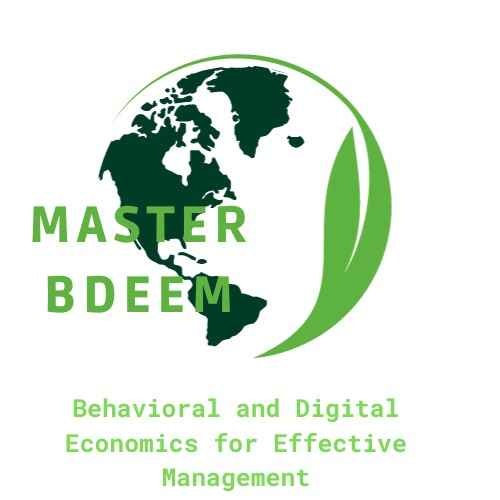
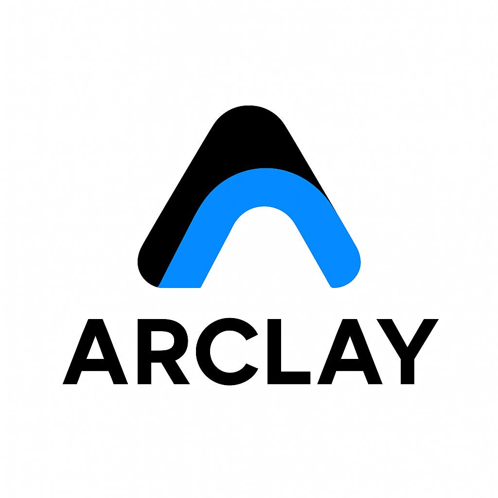
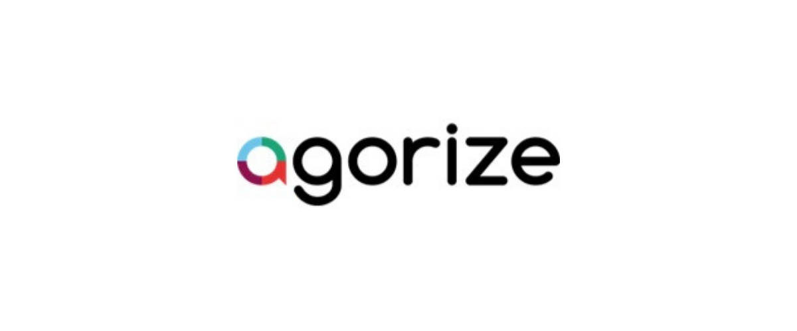
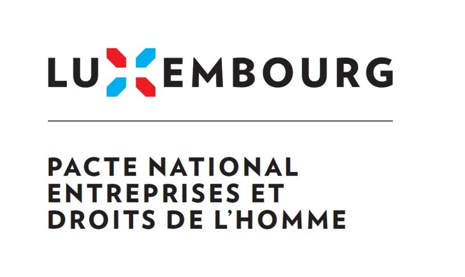

Projects
2023 — Eloquence Competition Winner


Reached the final round of the Rhetor ILERI eloquence competition and delivered a persuasive speech inspired by Nelson Mandela’s “A winner is a dreamer who never gives up.” Won the competition among the three semifinalists, representing ILERI as the 2023 laureate.
Autumn 2024 — Debate Tournament Organisation
As President of Rhetor ILERI, designed the full structure of the Autumn 2024 eloquence tournament, including topic development, jury recruitment, event logistics, and coordination with partner associations. Co-organised a charity evening whose profits were donated to cancer patients.
January 2024 — Academic Article Publication
Conducted supervised academic research examining the structural limits of international justice in realist political systems. Developed a comparative analysis based on the Rwandan genocide and the persecution of Uyghurs in China. The article was published on LinkedIn, reaching a broad academic and professional audience.
July 2025 — Master Thesis & Oral Defense

Completed a full strategic and environmental assessment of the Luxembourg Red Cross as part of the BDEEM Master’s program. Produced the organisation’s first carbon footprint, carried out sectoral benchmarking, and analysed humanitarian ESG responsibilities. Successfully defended the thesis on 4 July 2025.
November 2025 — ARCLAY Behavioral Design App
Developed a digital concept grounded in behavioural science for the course “Neuroscience, Marketing & Behavioral Economics.” Designed the app’s incentive system and UX architecture while co-authoring the full analytical report. The project was presented and defended during the evaluation session on 24 November 2025.
December 2025 — AdheSense Engineering Challenge
Participated in the international Agorize innovation challenge by developing an intelligent rail-grip safety system. Conducted feasibility analysis, safety assessment, and risk modelling in a team setting. The project was officially submitted on 1 December 2025.
December 2025 — Euromobility Consulting Project

Worked as a consulting team on the optimisation of Euromobility’s purchasing and supply chain strategy. Identified cost-saving opportunities, operational bottlenecks, and strategic levers for improvement. Delivered a full briefing note and defended the recommendations during the oral examination on 4 December 2025.
June 2025 — Human Rights E-learning Module

Developed a complete human-rights e-learning module for the Luxembourg Red Cross, including explanations, case studies, quizzes, and video-based scenarios. The module was integrated both into the Pacte National “Entreprises & Droits de l’Homme” training pathway and in the onboarding programme for new Red Cross employees.